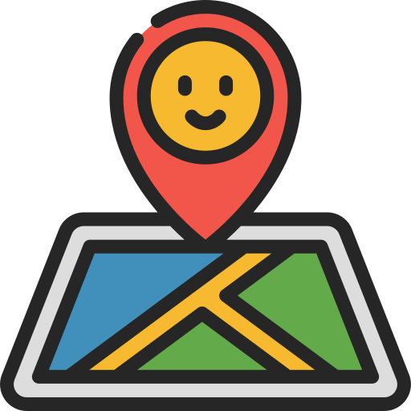

¡Bienvenid@ a mi portfolio! Aquí iré publicando mis proyectos. Espero que te guste 😊
Este proyecto es una aplicación de mapas que destaca lugares relevantes en ciudades predefinidas, como estadios e iglesias. Permite buscar ubicaciones y añadir marcadores personalizados. Además, muestra los terremotos recientes en la península y las capitales de países visitados por el equipo de desarrollo y colaboradores.
Este proyecto utiliza la API de Google Maps para mostrar mapas interactivos con marcadores personalizados. Se representan diferentes grupos de lugares por ciudad, capitales visitadas (cargadas desde un archivo XML externo), búsquedas de usuario y terremotos recientes obtenidos vía RSS del Instituto Geográfico Nacional. Los marcadores se organizan con distintos iconos y categorías, y se almacenan en localStorage para mantener un historial interactivo. Además, se incluyen leyendas dinámicas, ventanas de información, notificaciones visuales y controles para mostrar u ocultar distintos elementos del mapa, mejorando la experiencia del usuario.
Para acceder a la aplicación, haz click en la siguiente imagen: 